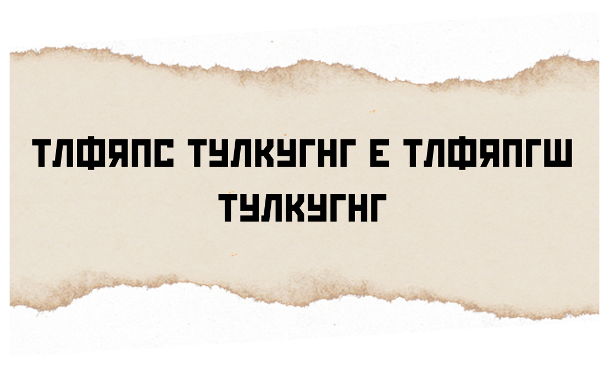

Итак, Мисти улетел, но потом я нашел небольшой клочок бумаги, на котором что-то написано. Смотря на этот шифр, я почему-то вспоминаю великого римского диктатора и политического деятеля, вот только забыл его имя... Пай. Нет Най. Нет... Может быть ты знаешь как его зовут?
Но и это еще не все. В расшифровке вам очень поможет информация, которую я дал вам о себе... Века, века, бегут как реки... О чем это я?
Кроме того я дам вам листок с очень странными записями. Я думаю, вы разберететь, что с ним делать. Я очень надеюсь вы правильно все расшифруете и найдете следующий след этого вредного Мисти!
